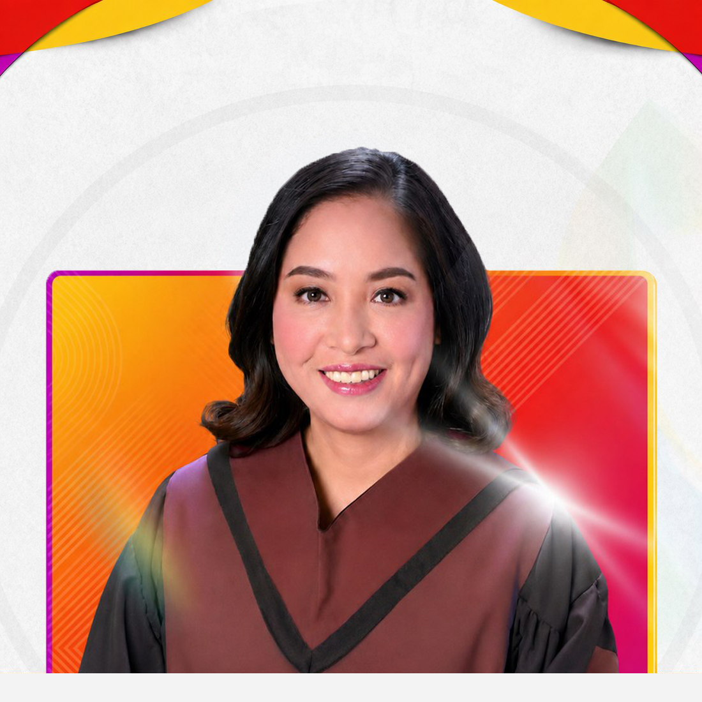
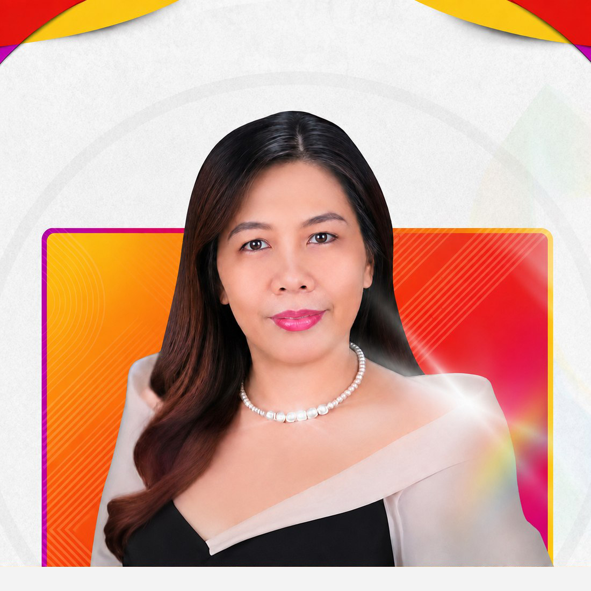
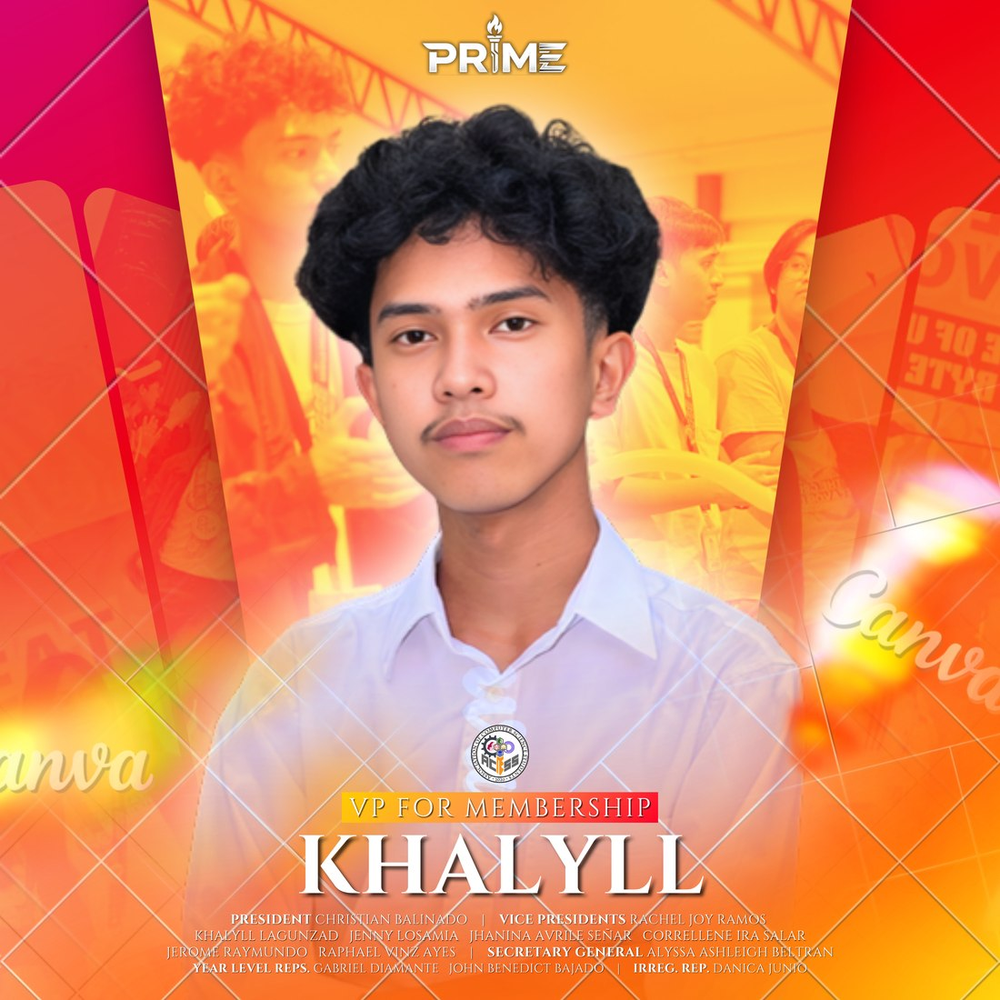
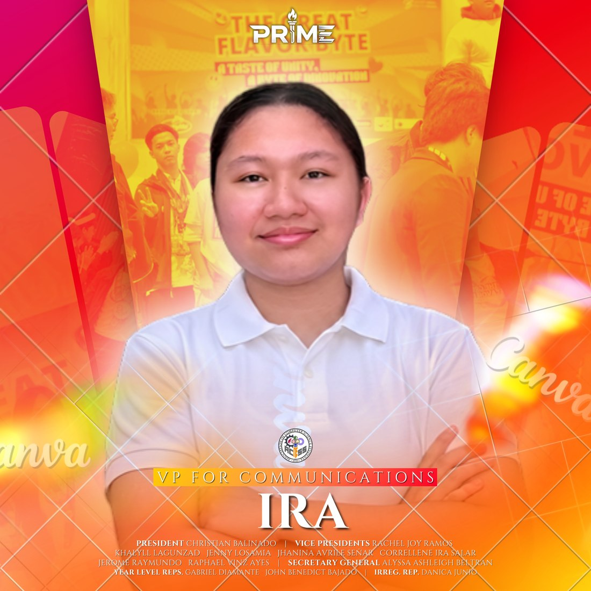
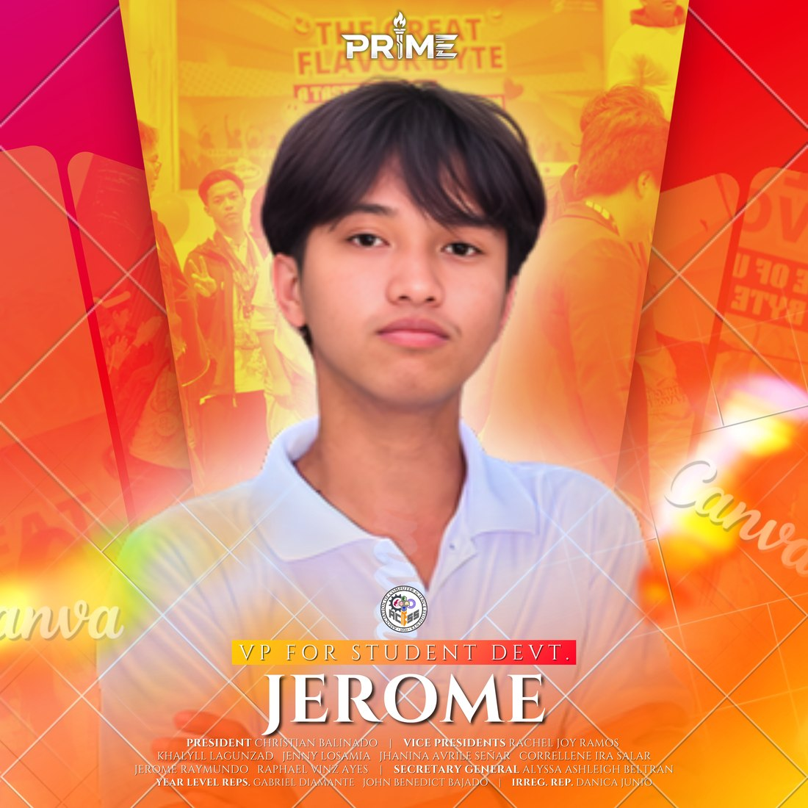
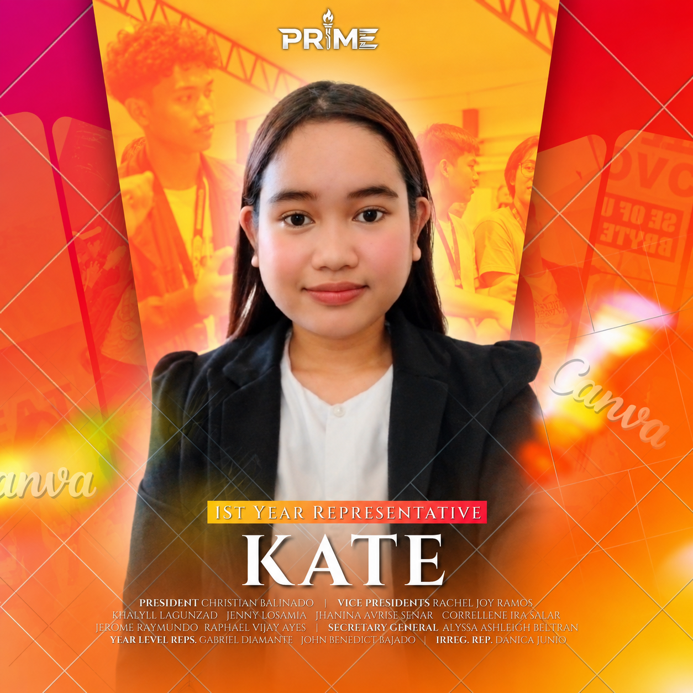
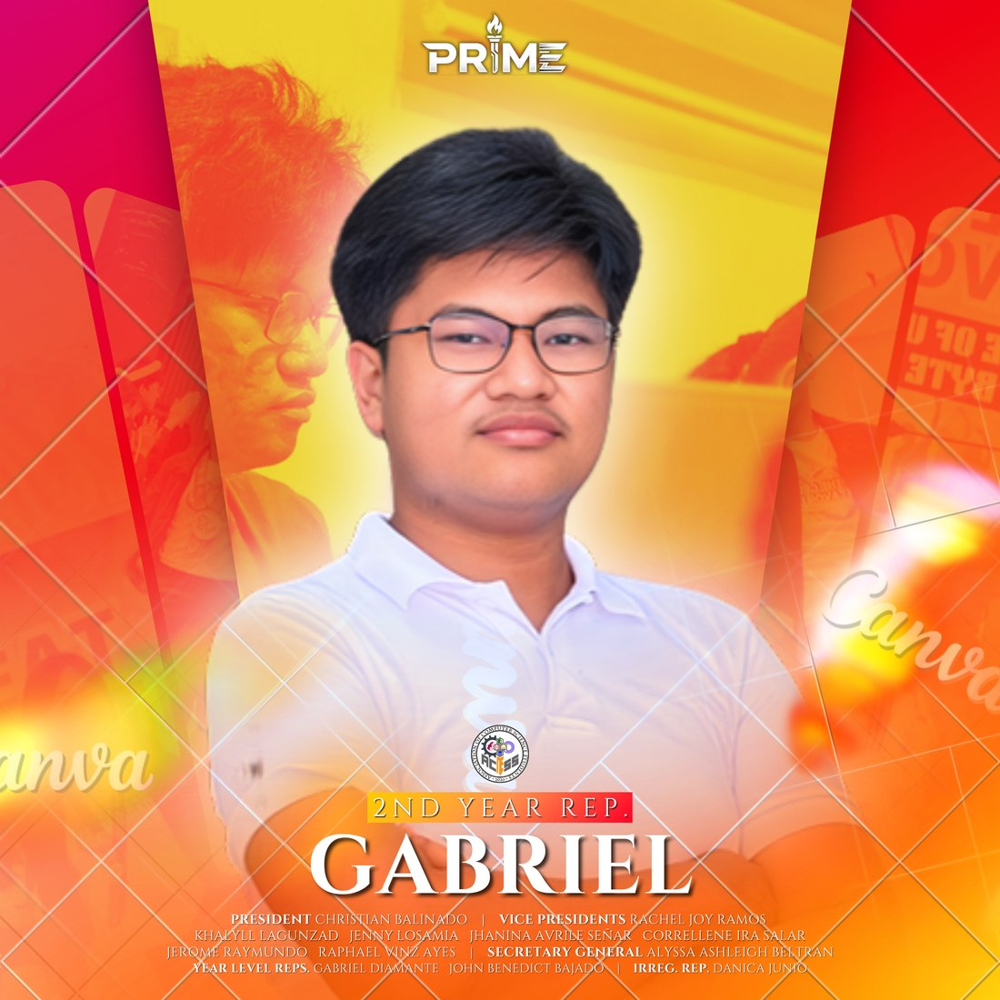
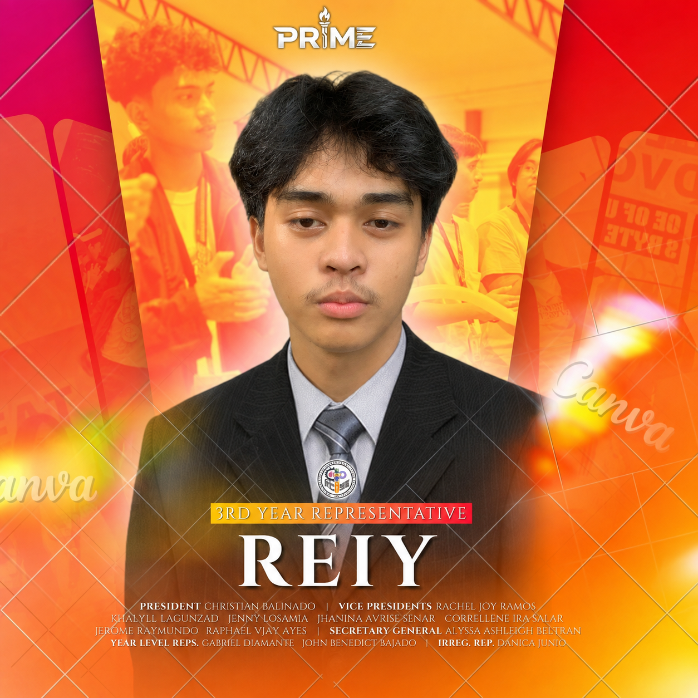
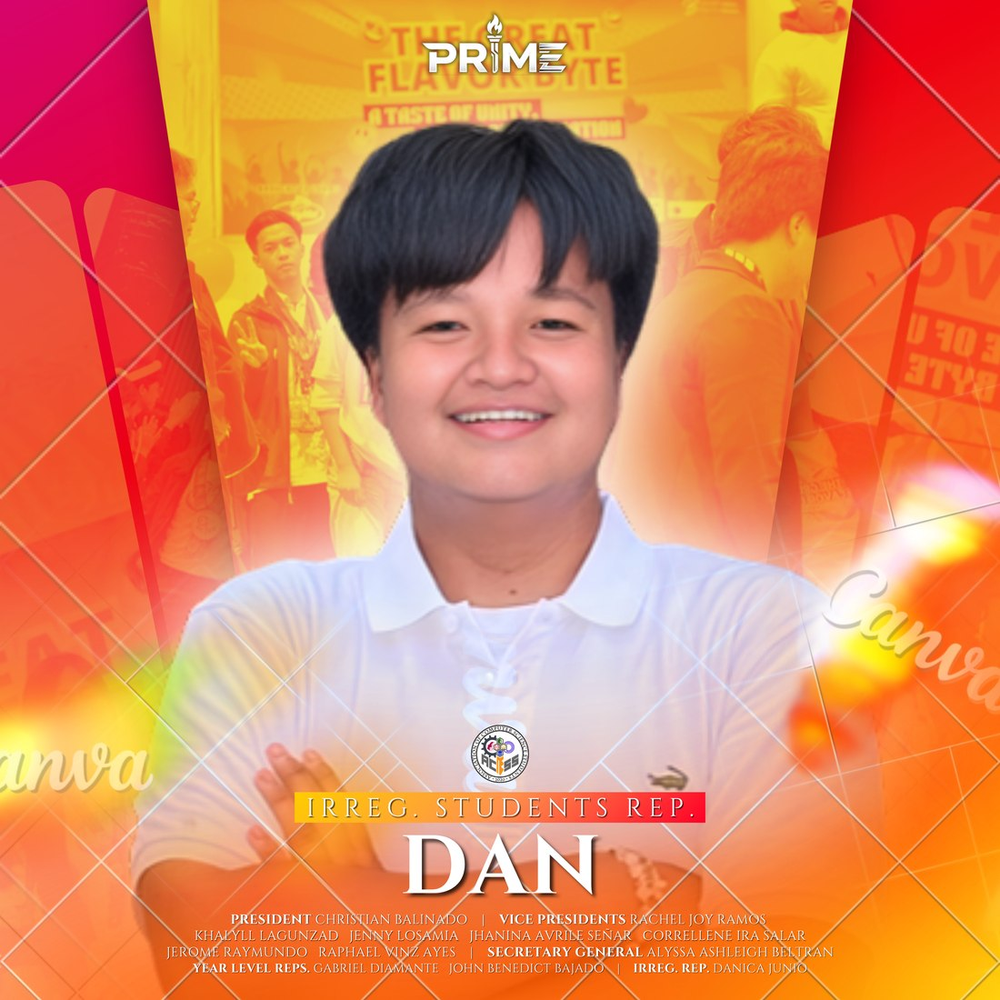

Dr. Gima B. Montecillo
College Dean
The academic officials and student officers who guide the organization and serve the Computer Science community.

College Dean

Department Chair · ACSS Adviser
Student leaders support the organization’s programs, operations, member experience, partnerships, finances, communications, and year-level representation.

President
A fourth-year BS Computer Science student passionate about technology, leadership, and innovation. He leads ACSS in creating meaningful opportunities that support students’ growth, collaboration, and professional development.

Vice President for Operations
A fourth-year BS Computer Science student interested in system testing and bug documentation. She supervises the organization’s operations and contributed to the first release of E-Salang 2.0.

Vice President for Membership
I am Khallyl C. Lagunzad, a BS Computer Science student passionate about learning, teamwork, and connecting with others. As Vice President for Membership, I help welcome new members, encourage participation, and foster an inclusive and active ACSS community.

Vice President for External Relations
A second-year BS Computer Science student who enjoys working with people, organizing activities, and drawing. She builds external partnerships that provide meaningful opportunities for ACSS members.

Vice President for Finance
A second-year BS Computer Science student interested in databases and connecting with people. She manages financial planning and aims to develop organized systems and fundraising opportunities for ACSS.

Vice President for Audit
A second-year BS Computer Science student interested in technology, graphic design, game design, and student leadership. He promotes transparency and accountability through structured auditing and reliable oversight.

Vice President for Communications
I’m a fourth-year BS Computer Science student who enjoys combining technology, logic, and creativity. I’m interested in digital design, gaming, and exploring new ideas and trends. I value adaptability, creativity, and continuous learning.

Vice President for Student Development
I am Jerome L. Raymundo, a BS Computer Science student who values growth, collaboration, and continuous learning. As Vice President for Student Development, I create opportunities that support the personal, academic, and professional growth of ACSS members.

Secretary General
I am Alyssa Ashleigh R. Beltran, a BS Computer Science student who is organized, responsible, and committed to teamwork and continuous growth. As the Secretary General, I manage important documents, records, and communications while helping ensure that ACSS activities and organizational matters are properly coordinated and documented.

1st Year Representative
I’m Kate Angela U. Bolado, a 1st-year BS Computer Science student who enjoys public speaking, meaningful conversations, and connecting with others. I’m a creative and curious person who loves exploring new ideas and developing my skills in technology and problem-solving. In the future, I aspire to become a software engineer or programmer.

2nd Year Representative
I’m Gabriel I. Diamante, a 2nd-year BS Computer Science student who values teamwork, responsibility, and continuous learning. I’m approachable, dedicated, and always open to new challenges. As the 2nd Year Representative, I represent the concerns of second-year students, share important information, and encourage their participation in ACSS activities.

3rd Year Representative
I am Dan Reiy Paul P. Briones, a BS Computer Science student who values learning, collaboration, and helping others. As Third-Year Representative, I represent my batchmates’ concerns, support fellow students, and help build a supportive and growing ACSS community.

4th Year Representative
I’m John Benedict B. Bajado, a 4th-year BS Computer Science student who values leadership, teamwork, and continuous growth. I’m responsible, approachable, and committed to supporting my fellow students. As the 4th Year Representative, I represent fourth-year students, communicate important information, and encourage active participation in ACSS activities.

Irregular Students Representative
I’m Danica R. Junio, a BS Computer Science student who values adaptability, perseverance, and continuous growth. I’m approachable, responsible, and committed to supporting my fellow students. As the Irregular Students Representative, I represent their concerns, communicate important information, and help ensure their voices are heard within ACSS.